건물 사진 리서치
기준 충족 2 / 258 · 정밀 검증 0건물마다 서로 다른 실제 사진 5장 이상을 직접 보고 구조를 대조한 뒤 모델을 고칩니다. 다운로드 수는 인정 수가 아닙니다. 동일 사진·크기만 다른 사진·유사 구도·다른 건물·조경·인물 사진은 제외하고, 참고·검토 대기 사진은 출처·원본 URL·SHA-256과 함께 보존합니다. 제외 사진 파일은 정리하고 URL·사유만 남깁니다. 검색 결과에서 썸네일로 걸러낸 후보는 다운로드하지 않고 각 동의 candidates.json에 제외 사유를 남깁니다.
보관 사진 기록 · 제외 기록 · 건물 원장
4동 신양인문학술정보관 — 인정 6 / 5 · 보관 6 · 확인 시점: 정면, 측면, 출입부, 세부, 원경
구조 분석 메모
부족한 시점: 후면, 지붕
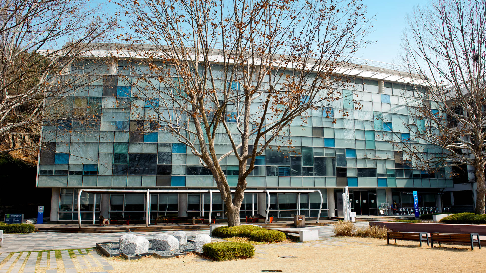
04-official.jpg 구조 참고정면출입부
겨울 전면 전체. 연속 곡면 유리 외피, 후퇴한 지상층, 기둥, 흰 곡선 캐노피, 넓은 얇은 처마와 옥상 난간 확인. 후면·치수는 확인 불가.
촬영일 미확인 · 게시일 미확인
출처 페이지 ↗ · 원본 URL ↗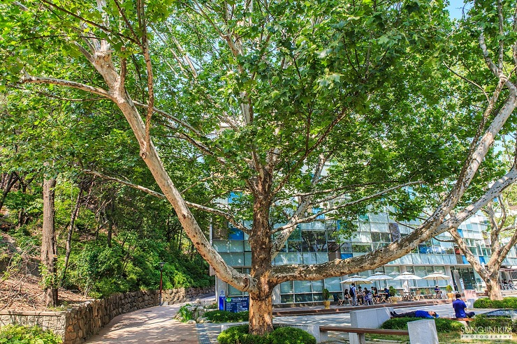
kodos-02.jpg 구조 참고정면원경
광장 쪽 유리 전면과 왼쪽 경사 보행로. 나무가 상층부를 가림. 유리면 하단과 포장 접점 확인.
촬영일 미확인 · 게시일 2012-07-14
출처 페이지 ↗ · 원본 URL ↗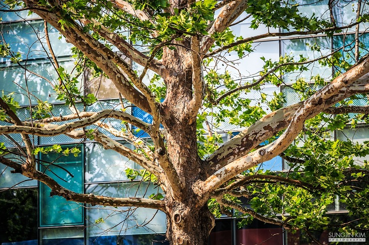
kodos-09.jpg 구조 참고세부
전면 유리 패널 근접. 청록·회백색 패널, 은색 수평·수직 멀리언 확인. 줄기에 가려진 부분은 추론 금지.
촬영일 미확인 · 게시일 2012-07-14
출처 페이지 ↗ · 원본 URL ↗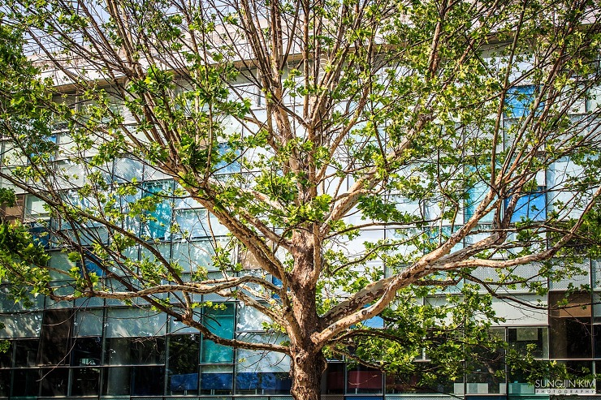
kodos-10.jpg 구조 참고정면세부
전면 유리면과 지면 접점. 일부 개폐창과 창틀의 깊이를 확인. 실제 층수와 패널 행 수를 혼동하지 않아야 함.
촬영일 미확인 · 게시일 2012-07-14
출처 페이지 ↗ · 원본 URL ↗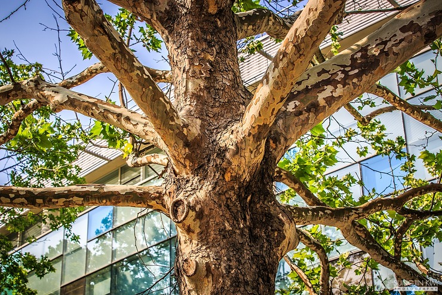
kodos-11.jpg 구조 참고세부
아래에서 올려다본 처마. 외벽 위로 돌출된 얇은 지붕과 반복 리브 확인. 후면 지붕 형상은 보이지 않음.
촬영일 미확인 · 게시일 2012-07-14
출처 페이지 ↗ · 원본 URL ↗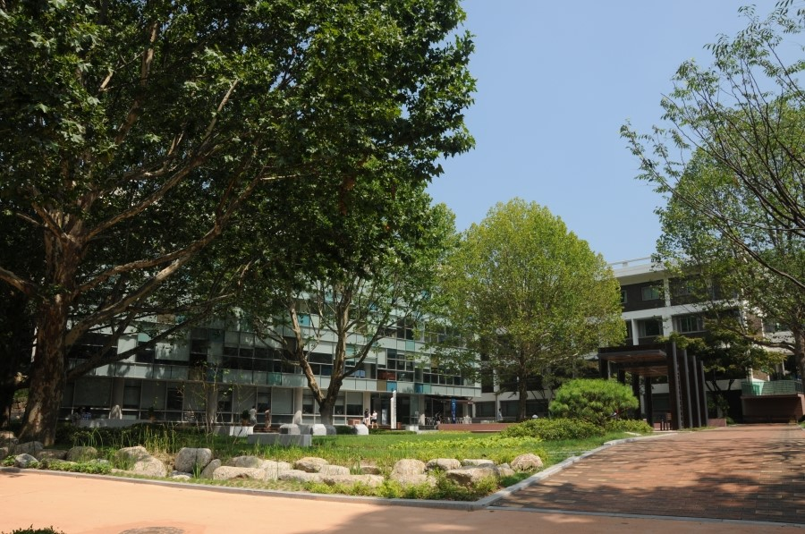
n-dffe7afc.jpg 구조 참고원경측면
잔디 정원 오른쪽 먼 위치에서 본 사선 원경(EXIF 2010-08-17). 4개 층 유리 외피의 전체 길이와 왼쪽 끝 모서리, 후퇴한 지상층 유리·기둥 열을 한 화면에 확인. 오른쪽에는 인접 백색 밴드 벽돌동과 퍼걸러. 상층 뒤쪽·지붕은 나무에 가림.
촬영일 2010-08-17 13:41:03 · 게시일 미확인
출처 페이지 ↗ · 원본 URL ↗8동 두산인문관 — 인정 6 / 5 · 보관 7 · 확인 시점: 정면, 측면, 지붕, 출입부, 세부
구조 분석 메모
부족한 시점: 후면
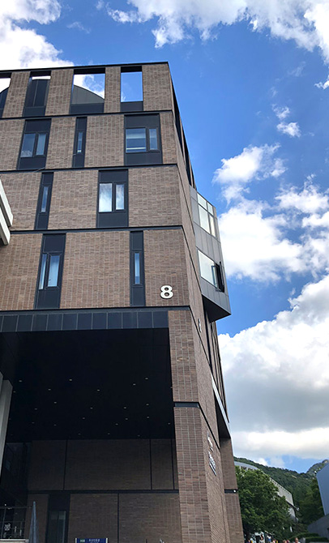
08-chio-official.jpg 구조 참고측면세부
인문대 국제협력센터 페이지 사진. 모서리를 올려다본 시점: 최상부의 뚫린 벽돌 스크린(하늘이 보임), 측면 흑색 돌출 베이의 깊이, 출입 공동 위 흑색 수평 부재, '8' 표지.
촬영일 미확인 · 게시일 미확인
출처 페이지 ↗ · 원본 URL ↗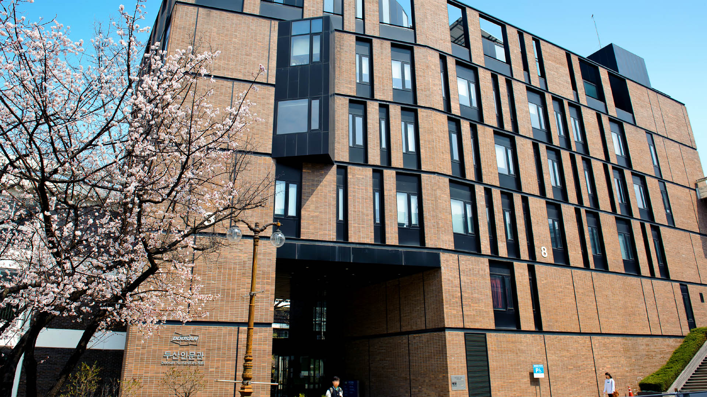
08-official.jpg 구조 참고정면출입부
공식 지도. 8동 주 입면: 황갈색 벽돌과 흑색 금속 세로 창 슬롯의 불규칙 배열, 왼쪽 상부 흑색 돌출 베이, 2개 층 높이 출입 공동과 흑색 헤드, 지붕 위 개방 스크린, 오른쪽 경사로와 계단.
촬영일 미확인 · 게시일 미확인
출처 페이지 ↗ · 원본 URL ↗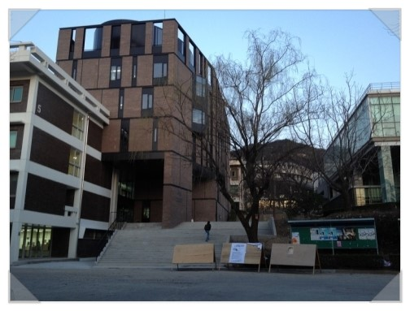
n-5c9ac275.jpg 구조 참고정면출입부
5동 '5' 모서리 옆에서 본 8동 전면(2012년 준공 직후 추정, 504px): 건물 폭 전체의 넓은 전면 계단, 2개 층 높이 출입 공동, 불규칙 세로 슬롯, 최상부 스크린. 08-official보다 왼쪽·낮은 위치라 5동과의 간격과 계단 폭이 새로 보임.
촬영일 미확인 · 게시일 미확인
출처 페이지 ↗ · 원본 URL ↗
n-b05fda99.jpg 구조 참고측면지붕
남서쪽 도로에서 본 8동 긴 입면(2026-04): 평면이 꺾여 입면이 휘어 보이는 형태, 층마다 폭·높이가 다른 세로 창 슬롯, 옥상 흑색 기계실 매스와 안테나. 오른쪽에 7동 끝 벽과 두 동 사이 간격.
촬영일 미확인 · 게시일 2026-04-12
출처 페이지 ↗ · 원본 URL ↗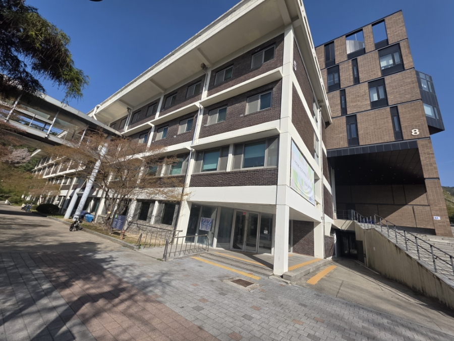
n-d3536cf3.jpg 구조 참고측면출입부
5동 모서리에서 본 8동 서쪽 모서리(2026-04). '8' 표지, 2개 층 높이 출입 공동과 흑색 헤드, 최상부 뚫린 벽돌 스크린, 오른쪽 가장자리 흑색 돌출 베이. 08-chio와 같은 모서리지만 지면의 단차(아래층 출입구로 내려가는 계단·램프·옹벽)를 새로 확인.
촬영일 미확인 · 게시일 2026-04-12
출처 페이지 ↗ · 원본 URL ↗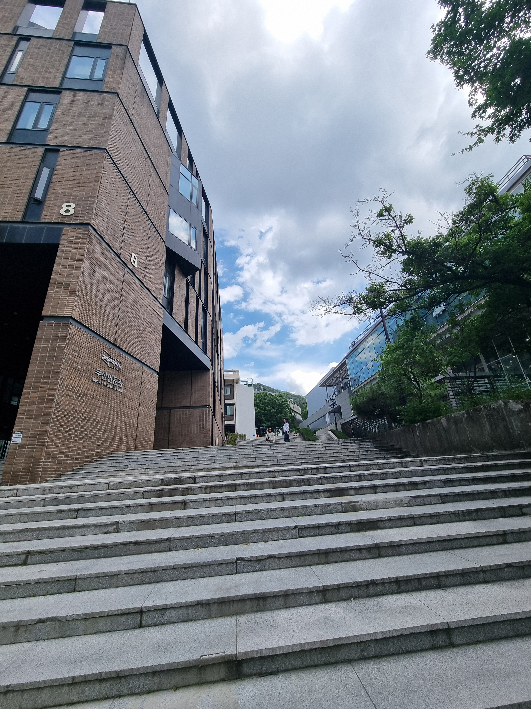
n-fcc4c61a.jpg 구조 참고측면출입부세부
대계단 아래에서 올려다본 8동 계단 쪽 입면(EXIF 2026-06-08): '두산인문관 Doosan Humanities Hall' 사인과 '8' 표지 2곳, 왼쪽 출입 공동의 깊이와 흑색 헤드, 입면이 여러 면으로 꺾이며 물러나는 형태, 중간 높이의 흑색 금속 돌출 베이 하부, 세로 슬롯 창, 최상부 뚫린 스크린 개구. 대계단 폭과 경사, 오른쪽 옹벽을 새로 확인.
촬영일 2026-06-08 15:04:47 · 게시일 2026-06-10
출처 페이지 ↗ · 원본 URL ↗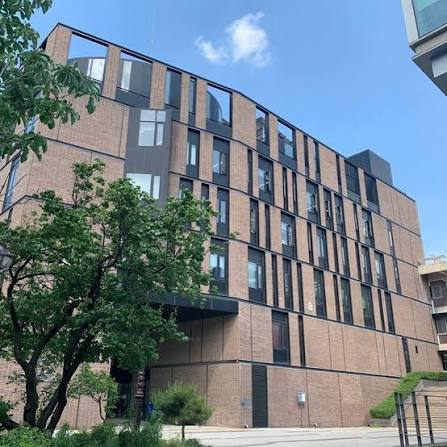
user-reference-20260927.png 구조 참고정면세부
사용자가 지적한 목표 외관. 긴 세로 창, 벽돌 면, 얇은 수평 금속 띠, 입구 캐노피, 옥상 상단 보의 비교 기준. 원본 웹 출처는 제공되지 않아 인터넷 사진 수에는 추가하지 않음.
촬영일 미확인 · 게시일 미확인
출처 페이지 ↗ · 원본 URL ↗1동 인문관1 — 인정 3 / 5 · 보관 4 · 확인 시점: 정면, 측면, 출입부, 세부
부족한 시점: 후면, 지붕
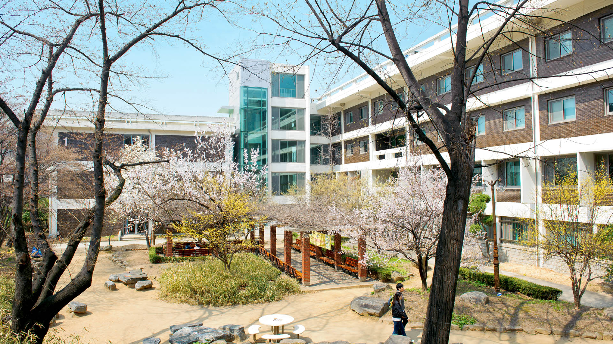
01-official.jpg 구조 참고정면측면출입부
공식 지도(촬영일 미확인). 안뜰에서 본 두 날개의 교차부: 백색 층 밴드·기둥과 갈색 벽돌, 지붕 위로 솟은 초록 유리 계단탑, 깊은 백색 처마, 왼쪽 날개 지상층 개방부, 안뜰 퍼걸러.
촬영일 미확인 · 게시일 미확인
출처 페이지 ↗ · 원본 URL ↗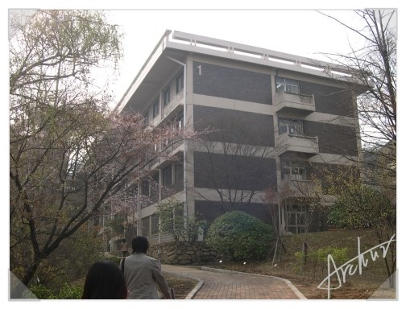
n-b34f3844.jpg 구조 참고측면세부
'1' 모서리를 남쪽 보행로에서 올려다본 끝 벽(2008년 전후, 504px 저해상도). 층마다 돌출한 백색 발코니 박스 3단, 끝 벽 벽돌 면과 층 밴드, 깊은 처마 모서리, 석축 기단. 초록 유리 계단탑이 아직 없음 → 탑은 이후 증설. 01-official과 다른 면.
촬영일 미확인 · 게시일 미확인
출처 페이지 ↗ · 원본 URL ↗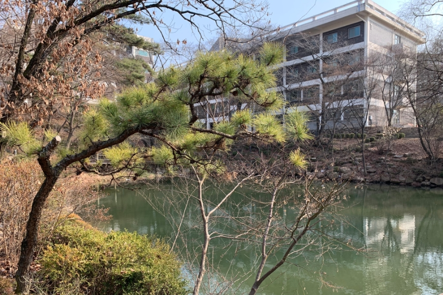
n-ed38594d.jpg 구조 참고측면
자하연 남쪽 물가 너머로 본 1동 북측 장변(자하연은 1동 바로 북쪽). 4개 층 백색 층 밴드와 벽돌, 층마다 돌출한 백색 발코니 박스, 깊은 처마, 연못가 석축 위에 선 지상층.
촬영일 미확인 · 게시일 2023-03-07
출처 페이지 ↗ · 원본 URL ↗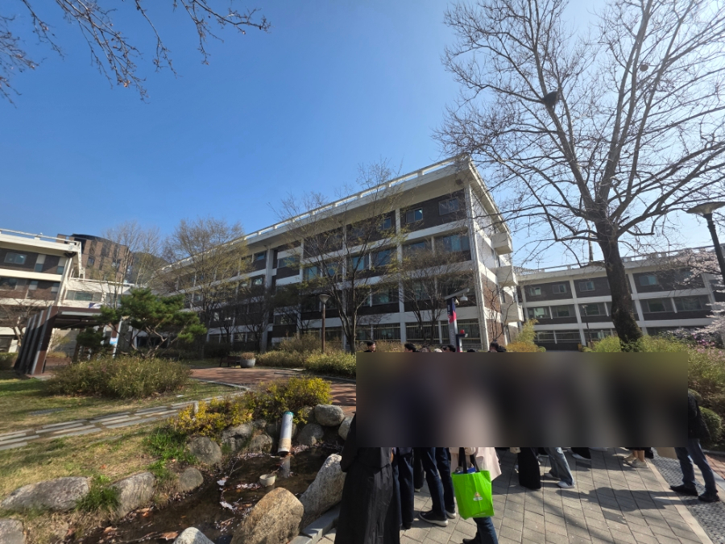
n-818db467.jpg 검토 대기
다운로드 완료, 검토 대기.
촬영일 미확인 · 게시일 2026-04-12
출처 페이지 ↗ · 원본 URL ↗2동 인문관2 — 인정 3 / 5 · 보관 3 · 확인 시점: 정면, 측면, 세부
부족한 시점: 후면, 지붕, 출입부
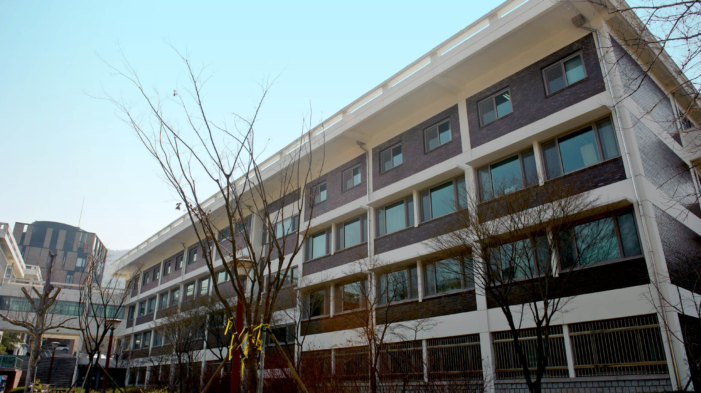
02-official.jpg 구조 참고정면세부
공식 지도. 남서쪽 지면에서 올려다본 2동 장변: 하부 두 층 넓은 띠창·상부 작은 펀칭창, 매우 깊은 백색 처마와 보, 지상층 창살 난간. 왼쪽 배경에 8동.
촬영일 미확인 · 게시일 미확인
출처 페이지 ↗ · 원본 URL ↗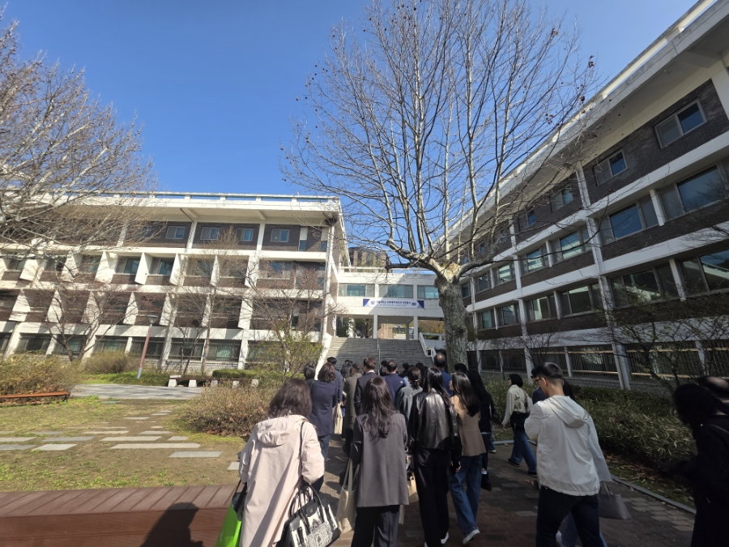
n-ad5fd16c.jpg 구조 참고측면세부
2동과 3동 사이 보행로에서 본 2동 동쪽 끝 입면 근경(오른쪽). 층 밴드 돌출 깊이, 기둥 간격, 창 크기, 지상층 창살, 처마 하부가 명확. 가운데는 3동과 이어지는 연결부·계단.
촬영일 미확인 · 게시일 2026-04-12
출처 페이지 ↗ · 원본 URL ↗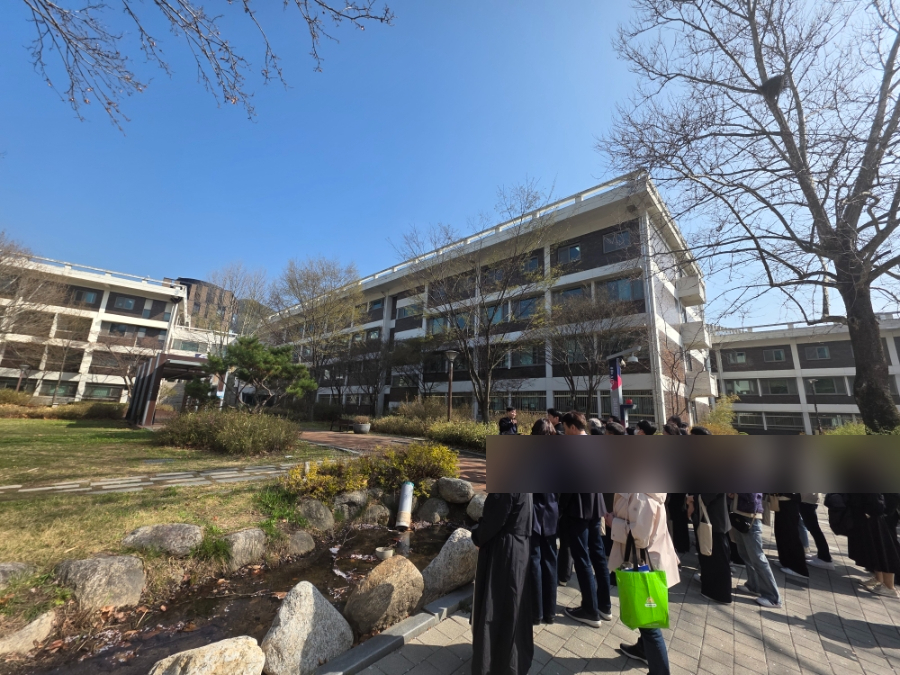
n-e4f84300.jpg 구조 참고정면측면
안뜰 동쪽에서 남서쪽으로 본 2동 동북 장변 전체(초광각, 2026-04 게시). 4개 층 벽돌 띠와 백색 층 밴드·기둥, 깊은 처마, 동쪽 끝의 백색 수직 발코니 스택, 지상층 창살. 왼쪽 끝에 3동과의 연결 통로 구조, 오른쪽에 1동. 평면도(reference/precincts)의 배치와 일치.
촬영일 미확인 · 게시일 2026-04-12
출처 페이지 ↗ · 원본 URL ↗3동 인문관3 — 인정 3 / 5 · 보관 3 · 확인 시점: 정면, 측면, 출입부, 세부, 원경
부족한 시점: 후면, 지붕
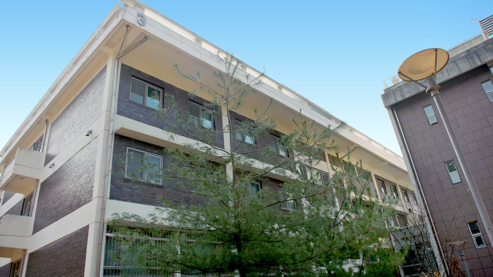
03-official.jpg 구조 참고측면세부
공식 지도. '3' 숫자가 붙은 모서리를 올려다봄: 처마 모서리와 돌출 보·홈통, 백색 층 밴드와 기둥, 끝 벽의 외부 발코니 슬래브, 벽돌 줄눈. 오른쪽은 인접 동 타일 외벽.
촬영일 미확인 · 게시일 미확인
출처 페이지 ↗ · 원본 URL ↗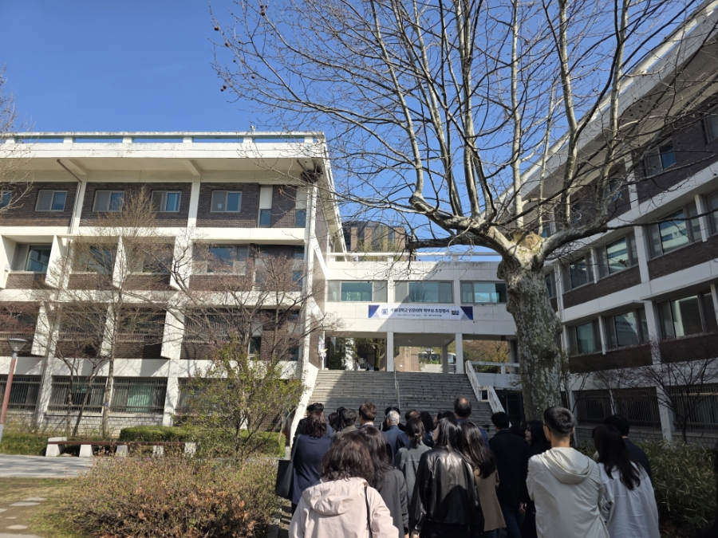
n-39cbf673.jpg 구조 참고측면출입부세부
3동 남쪽 끝 입면과 2동으로 이어지는 연결부 근경. 3동의 격자형 백색 프레임(층 밴드+기둥)과 벽돌 패널 비율, 처마 깊이, 지상층 필로티 아래 계단과 2층 높이 연결 블록(현수막)을 확인.
촬영일 미확인 · 게시일 2026-04-12
출처 페이지 ↗ · 원본 URL ↗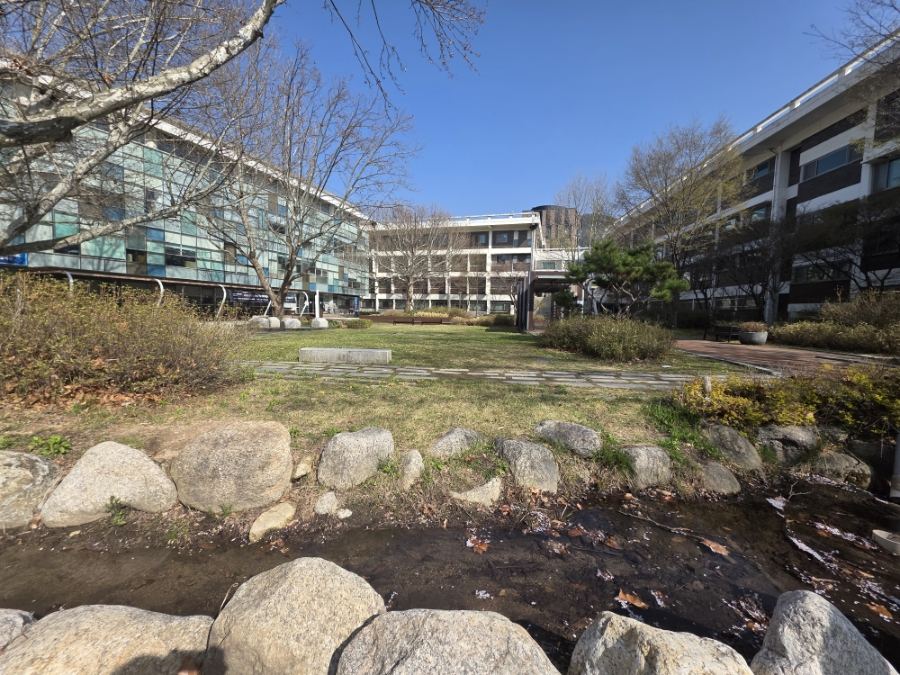
n-56828cc5.jpg 구조 참고정면원경
안뜰 개울가에서 동쪽으로 본 3동 서쪽(안뜰) 입면 정면 원경. 4개 층 백색 밴드·벽돌, 중앙 지상층의 열린 통로와 퍼걸러, 오른쪽 2동·왼쪽 4동과의 상대 위치 확인. 캡션 '좌에서 우로 4동, 3동, 2동'이 평면도와 일치.
촬영일 미확인 · 게시일 2026-04-12
출처 페이지 ↗ · 원본 URL ↗12동 사범교육협력센터 — 인정 3 / 5 · 보관 3 · 확인 시점: 정면, 측면, 출입부, 세부
부족한 시점: 후면, 지붕
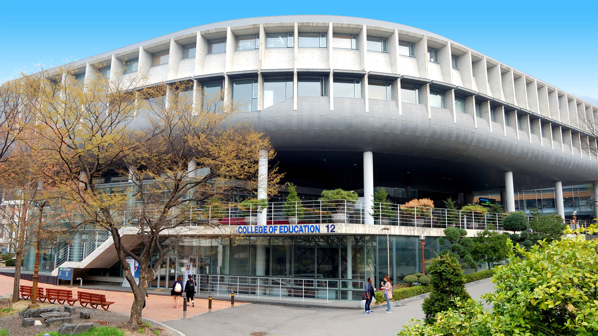
12-official.jpg 구조 참고정면출입부
공식 지도. 곡면 상부 매스: 2개 층 깊은 수직 콘크리트 날개와 띠창, 그 아래 금속판 곡면 하부, 원형 기둥 필로티, 지상층 유리와 'COLLEGE OF EDUCATION 12', 중간층 테라스 난간과 화분, 왼쪽 외부 계단.
촬영일 미확인 · 게시일 미확인
출처 페이지 ↗ · 원본 URL ↗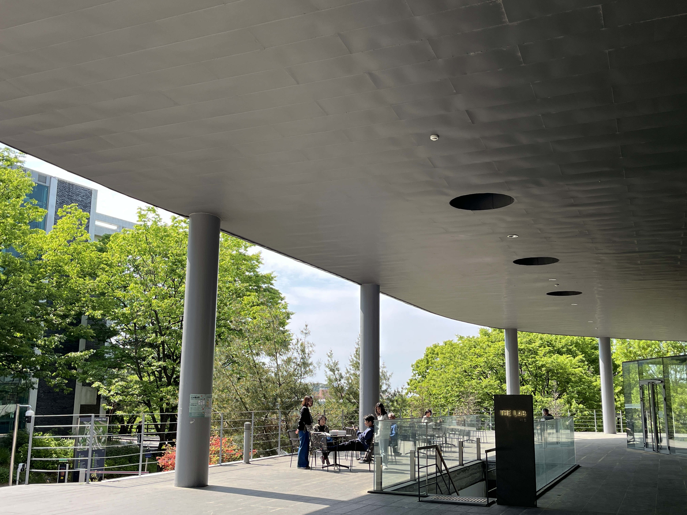
n-4439c6ef.jpg 구조 참고세부출입부
12동 곡면 금속 하부 아래 테라스를 남서쪽으로 본 근경(EXIF 2026-05-09): 매끈한 금속판 하부면과 매입 원형 조명, 원형 기둥 간격, 강선 난간, 테라스 끝 유리 난간과 계단 출입 박스, 필로티 아래로 보이는 맞은편 동.
촬영일 2026-05-09 15:09:16 · 게시일 2026-06-02
출처 페이지 ↗ · 원본 URL ↗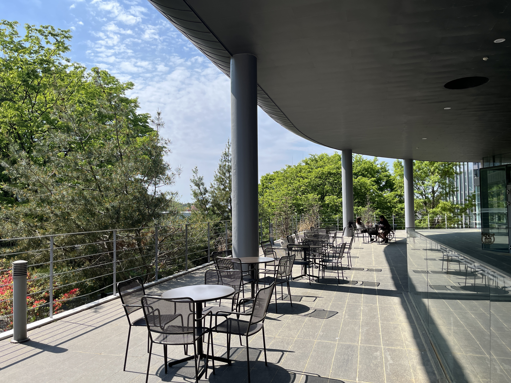
n-caf221a9.jpg 구조 참고세부측면
같은 테라스를 곡선 방향으로 본 근경(EXIF 2026-05-09, 6분 차): 하부 곡면 가장자리의 휘어진 윤곽, 기둥 열이 곡선을 따라 배치됨, 오른쪽 지상층 유리 파빌리온 외벽, 테라스 바닥 마감. 4439c6ef와 다른 방향의 부재를 확인.
촬영일 2026-05-09 15:03:11 · 게시일 2026-06-02
출처 페이지 ↗ · 원본 URL ↗111동 사범대학 간이식당 — 인정 3 / 5 · 보관 4 · 확인 시점: 정면, 측면, 후면, 출입부, 세부
부족한 시점: 지붕
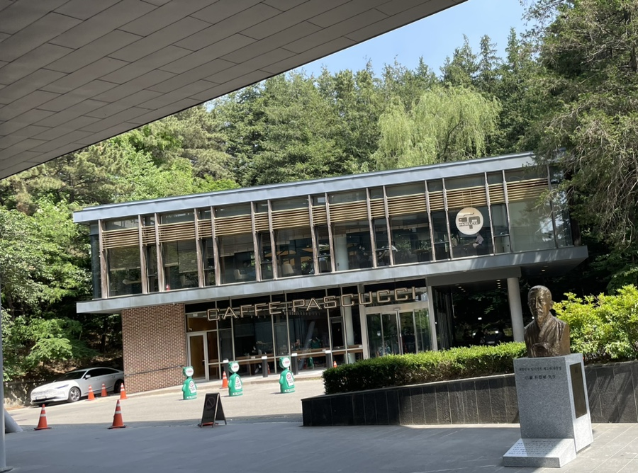
n-a7e2270c.jpg 구조 참고정면
도로 쪽 정면(2023 게시): 2층 매스. 지상층 벽돌 벽과 유리 카페 전면(CAFFE PASCUCCI), 2층 전체 유리+목재 세로 루버, 얇은 돌출 지붕판, 오른쪽 기둥 하나로 받친 2층 캔틸레버. 앞에 흉상.
촬영일 미확인 · 게시일 2023-05-20
출처 페이지 ↗ · 원본 URL ↗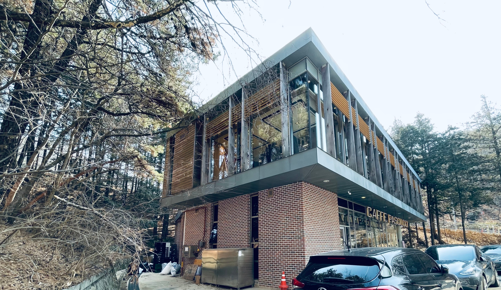
n-c59913a3.jpg 구조 참고측면후면
주차장 쪽 모서리 사선(2025 게시): 벽돌 하부 매스보다 2층 유리·루버 매스가 넓게 돌출, 모서리 벽돌 기둥, 2층 바닥판 테두리, 지붕판 두께. 뒤쪽 경사 숲.
촬영일 미확인 · 게시일 2025-05-22
출처 페이지 ↗ · 원본 URL ↗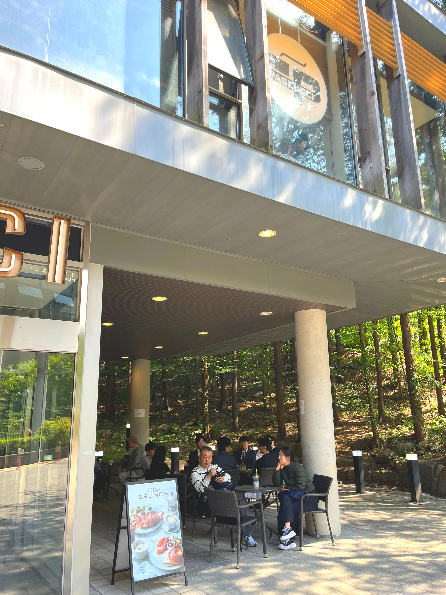
n-cf0c6a11.jpg 구조 참고출입부세부
돌출된 2층 아래 출입부 근경(2026 게시): 원형 기둥 2개, 2층 바닥 하부 마감과 매입 조명, 유리 벽과 야외 좌석, 2층 루버 속 원형 간판.
촬영일 미확인 · 게시일 2026-06-02
출처 페이지 ↗ · 원본 URL ↗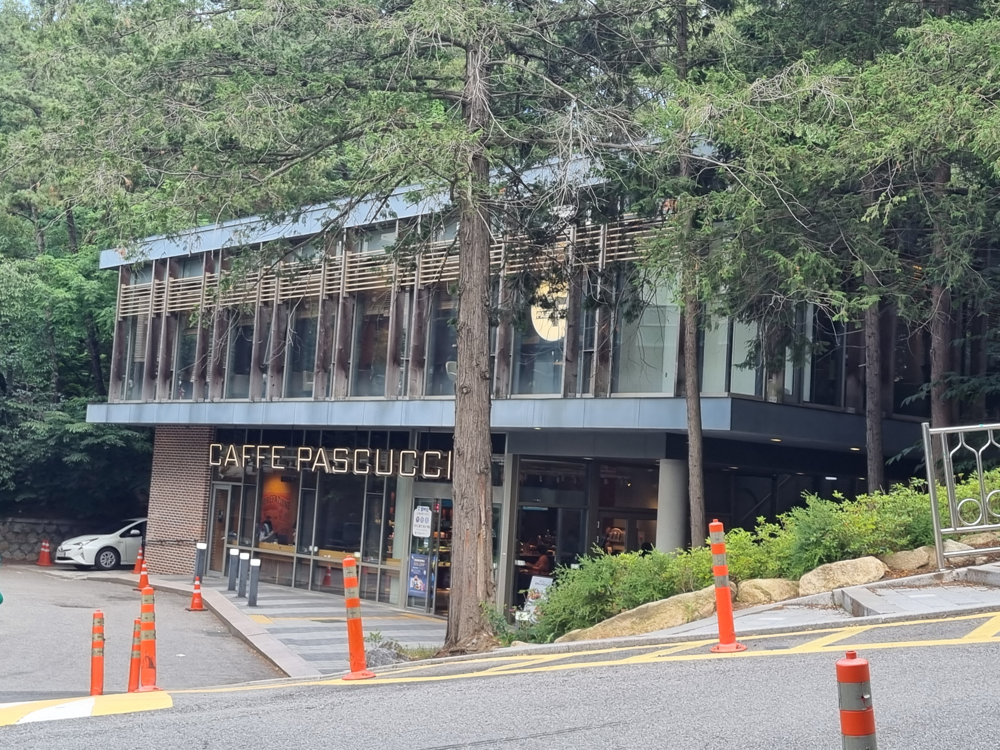
n-8d06cfb2.jpg 검토 대기
다운로드 완료, 검토 대기.
촬영일 2026-06-08 15:10:17 · 게시일 2026-06-10
출처 페이지 ↗ · 원본 URL ↗7동 인문관6 — 인정 2 / 5 · 보관 2 · 확인 시점: 정면, 측면
부족한 시점: 후면, 지붕, 출입부
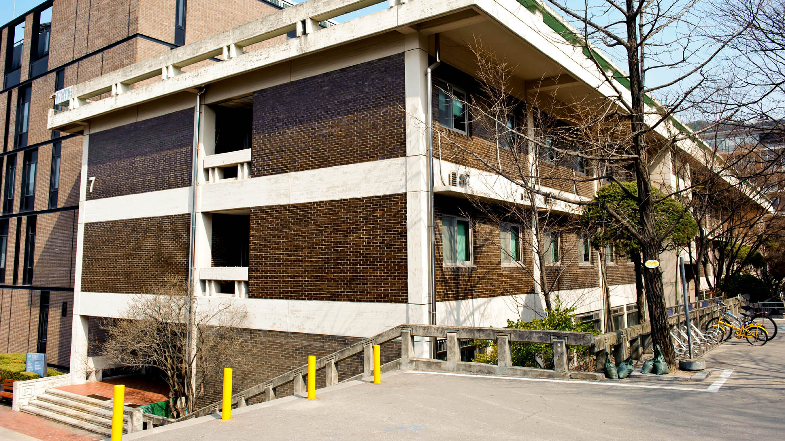
07-official.jpg 구조 참고측면정면
공식 지도(촬영일 미확인, 2026 증축 공사 이전 외관). '7' 끝 벽: 벽돌 면을 뚫은 깊은 로지아 공동, 노출된 처마 보, 경사 대지의 석축 난간과 램프, 장변 창 배열. 증축 이후 외관은 별도 확인 필요.
촬영일 미확인 · 게시일 미확인
출처 페이지 ↗ · 원본 URL ↗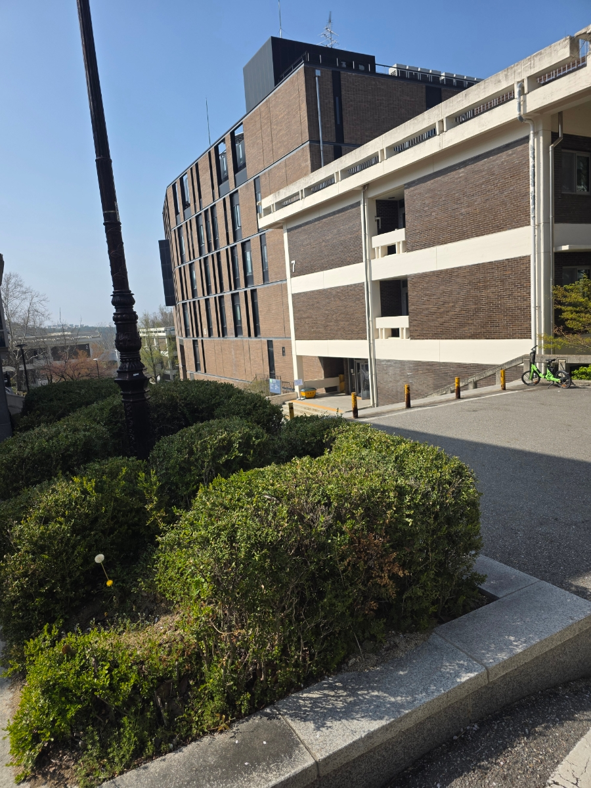
n-b05fda99.jpg 구조 참고측면
8동 쪽(남서)에서 본 7동 끝 벽 사선(2026-04 게시): '7' 표지, 벽돌 면의 오목한 로지아와 백색 난간 박스, 층 밴드, 지상층 출입구와 볼라드, 경사 도로. 07-official과 반대쪽 각도이며 2026년 4월에도 증축 전 외관이 유지됨을 확인.
촬영일 미확인 · 게시일 2026-04-12
출처 페이지 ↗ · 원본 URL ↗10동 사범관2 — 인정 2 / 5 · 보관 2 · 확인 시점: 정면, 측면, 출입부
부족한 시점: 후면, 지붕
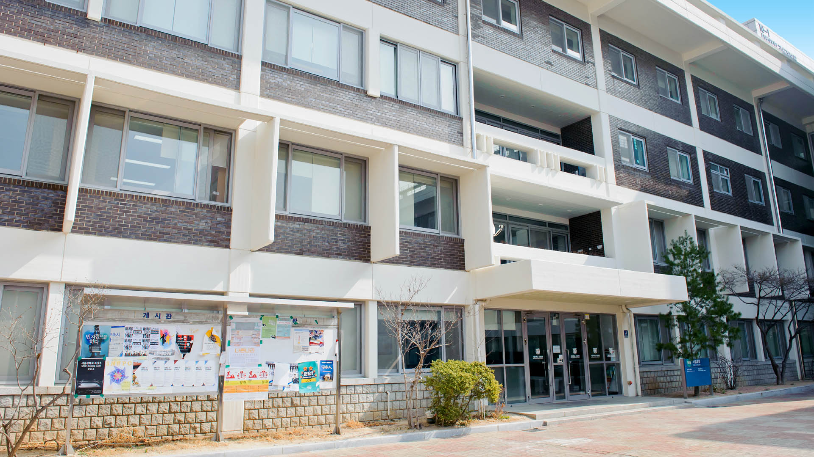
10-official.jpg 구조 참고정면출입부
공식 지도. 출입부 입면: 창마다 두꺼운 백색 돌출 테두리, 오른쪽 오목한 발코니 층, 출입 캐노피 슬래브와 유리문, 거친 석재 기단, 게시판.
촬영일 미확인 · 게시일 미확인
출처 페이지 ↗ · 원본 URL ↗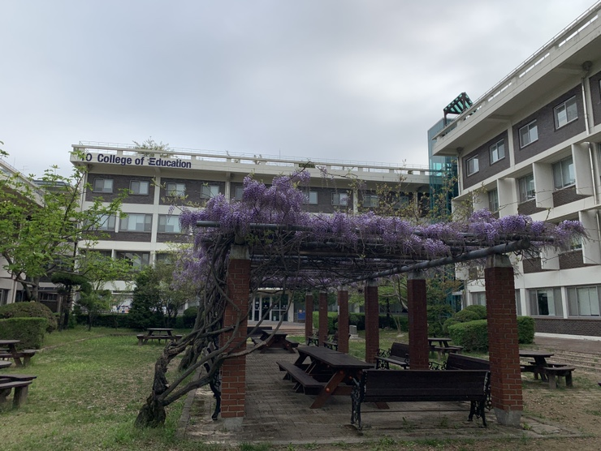
n-97cc74c2.jpg 구조 참고정면측면
10동 안뜰 쪽 입면(처마에 '10 College of Education'). 4개 층 백색 밴드·벽돌, 오른쪽 ㄱ자로 꺾인 날개의 층별 발코니 박스, 지상층 유리 출입부, 앞의 등나무 퍼걸러(벽돌 기둥). 처마 위 옥상 난간.
촬영일 미확인 · 게시일 2023-05-01
출처 페이지 ↗ · 원본 URL ↗5동 인문관4 — 인정 1 / 5 · 보관 1 · 확인 시점: 정면, 측면, 출입부
부족한 시점: 후면, 지붕
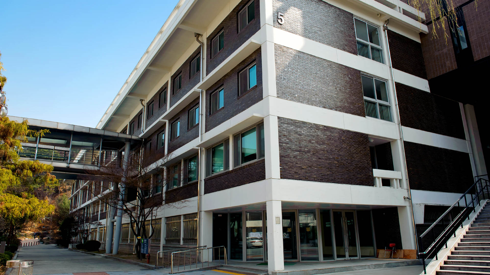
05-official.jpg 구조 참고정면측면출입부
공식 지도. '5' 모서리: 백색 프레임과 어두운 벽돌, 모서리를 감싼 지상층 유리 출입홀, 왼쪽 원형 기둥 위 유리 연결 구름다리, 오른쪽 외부 계단과 난간, 깊은 처마.
촬영일 미확인 · 게시일 미확인
출처 페이지 ↗ · 원본 URL ↗6동 인문관5 — 인정 1 / 5 · 보관 1 · 확인 시점: 정면, 측면
부족한 시점: 후면, 지붕, 출입부
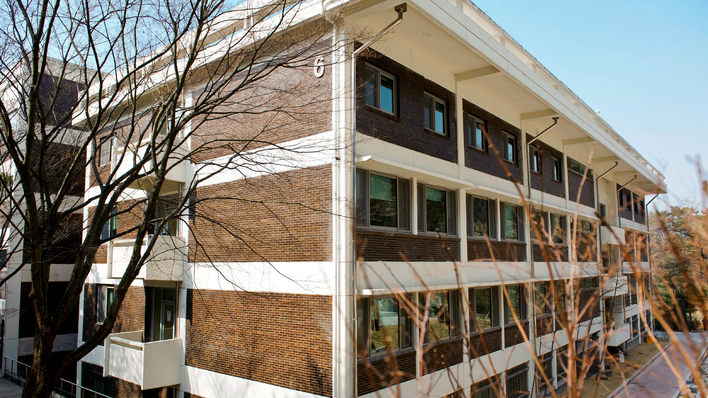
06-official.jpg 구조 참고측면정면
공식 지도. '6' 모서리: 붉은빛 벽돌, 끝 벽의 넓은 무창 벽돌 면, 장변의 띠창과 창 차양, 왼쪽 끝 캔틸레버 발코니 슬래브, 깊은 처마와 홈통.
촬영일 미확인 · 게시일 미확인
출처 페이지 ↗ · 원본 URL ↗9동 사범관1 — 인정 1 / 5 · 보관 1 · 확인 시점: 정면, 측면, 출입부
부족한 시점: 후면, 지붕
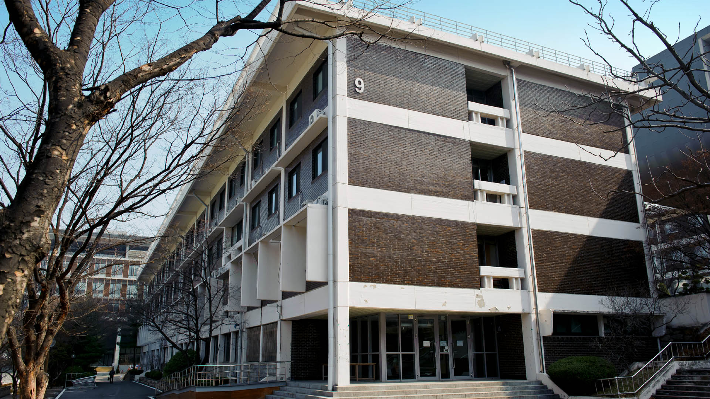
09-official.jpg 구조 참고정면측면출입부
공식 지도. '9' 모서리: 강한 백색 격자(밴드+기둥)와 벽돌 패널, 오른쪽 수직 계단 공동과 가로보, 장변 창마다 돌출 박스 차양, 지상층 유리 출입구와 계단, 옥상 난간.
촬영일 미확인 · 게시일 미확인
출처 페이지 ↗ · 원본 URL ↗11동 사범관3 — 인정 1 / 5 · 보관 1 · 확인 시점: 정면, 측면, 출입부
부족한 시점: 후면, 지붕
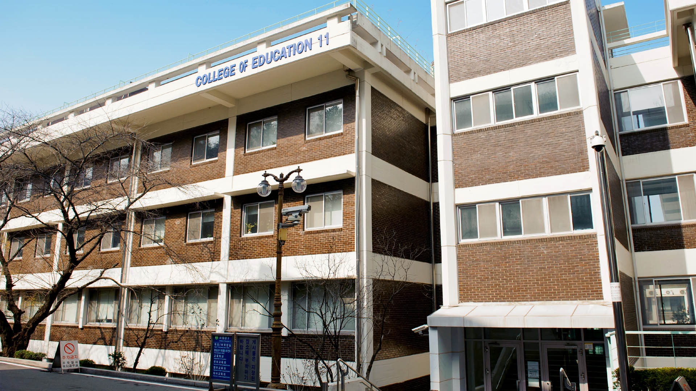
11-official.jpg 구조 참고정면측면출입부
공식 지도. 'COLLEGE OF EDUCATION 11' 처마: 붉은빛 벽돌과 백색 밴드, 옥상 난간, 오른쪽의 더 높은 밝은 벽돌 계단·설비동과 그 하부 출입 캐노피.
촬영일 미확인 · 게시일 미확인
출처 페이지 ↗ · 원본 URL ↗13동 과학교육관 — 인정 1 / 5 · 보관 1 · 확인 시점: 정면, 측면
부족한 시점: 후면, 지붕, 출입부
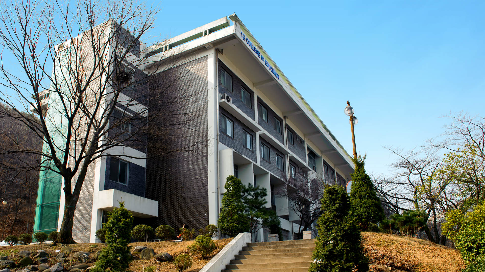
13-official.jpg 구조 참고측면정면
공식 지도. 경사지 아래에서 올려다봄: 처마 'COLLEGE OF EDUCATION 13' 와 처마 위 별도 보, 장변의 오목한 창 베이, 왼쪽 무창 벽돌 면과 하부 캔틸레버 슬래브, 녹색 유리 계단탑, 대지 계단.
촬영일 미확인 · 게시일 미확인
출처 페이지 ↗ · 원본 URL ↗15동 법학관1 — 인정 1 / 5 · 보관 1 · 확인 시점: 정면, 측면
부족한 시점: 후면, 지붕, 출입부
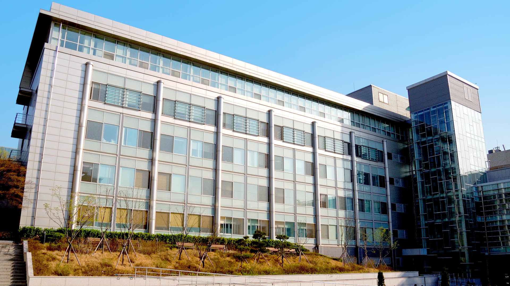
15-official.jpg 구조 참고정면측면
공식 지도. 커튼월 장변: 밝은 패널과 유리 격자, 전면 전층 원형 금속 기둥 열, 후퇴 최상층 고측창, 오른쪽 청회색 유리 승강기탑과 상부 루버, 대지 옹벽과 계단.
촬영일 미확인 · 게시일 미확인
출처 페이지 ↗ · 원본 URL ↗14동 인문관7 — 인정 0 / 5 · 보관 4 · 확인 시점: 없음
부족한 시점: 정면, 측면, 후면, 지붕, 출입부
17동 법학관2 — 인정 0 / 5 · 보관 1 · 확인 시점: 없음
부족한 시점: 정면, 측면, 후면, 지붕, 출입부
22동 자연과학관4 — 인정 0 / 5 · 보관 1 · 확인 시점: 없음
부족한 시점: 정면, 측면, 후면, 지붕, 출입부
24동 자연과학관6 — 인정 0 / 5 · 보관 1 · 확인 시점: 없음
부족한 시점: 정면, 측면, 후면, 지붕, 출입부

n-f083b9a8.jpg 검토 대기
다운로드 완료, 검토 대기.
촬영일 2025-02-15 12:14:34 · 게시일 2025-02-19
출처 페이지 ↗ · 원본 URL ↗25-1동 자연대강의및실험연구동 — 인정 0 / 5 · 보관 1 · 확인 시점: 없음
부족한 시점: 정면, 측면, 후면, 지붕, 출입부
61동 기초교육원 — 인정 0 / 5 · 보관 2 · 확인 시점: 없음
부족한 시점: 정면, 측면, 후면, 지붕, 출입부
62-1동 중앙도서관 관정관 — 인정 0 / 5 · 보관 3 · 확인 시점: 없음
부족한 시점: 정면, 측면, 후면, 지붕, 출입부
84동 근대법학교육100주년기념관 — 인정 0 / 5 · 보관 2 · 확인 시점: 없음
부족한 시점: 정면, 측면, 후면, 지붕, 출입부
n-806d1438.jpg 검토 대기
다운로드 완료, 검토 대기.
촬영일 2026-06-08 14:55:41 · 게시일 2026-06-10
출처 페이지 ↗ · 원본 URL ↗n-a8bb2896.jpg 검토 대기
다운로드 완료, 검토 대기.
촬영일 2026-06-08 14:54:14 · 게시일 2026-06-10
출처 페이지 ↗ · 원본 URL ↗103동 규장각한국학연구원 — 인정 0 / 5 · 보관 2 · 확인 시점: 없음
부족한 시점: 정면, 측면, 후면, 지붕, 출입부
n-5b5e3858.jpg 검토 대기
다운로드 완료, 검토 대기.
촬영일 2026-06-08 14:53:04 · 게시일 2026-06-10
출처 페이지 ↗ · 원본 URL ↗n-e3d484ae.jpg 검토 대기
다운로드 완료, 검토 대기.
촬영일 2026-06-08 14:50:24 · 게시일 2026-06-10
출처 페이지 ↗ · 원본 URL ↗250동 인문관연결동(1동-2동) — 인정 0 / 5 · 보관 1 · 확인 시점: 없음
부족한 시점: 정면, 측면, 후면, 지붕, 출입부
252동 교육관연결동(10동-11동) — 인정 0 / 5 · 보관 1 · 확인 시점: 없음
부족한 시점: 정면, 측면, 후면, 지붕, 출입부
301동 제1공학관 — 인정 0 / 5 · 보관 1 · 확인 시점: 없음
부족한 시점: 정면, 측면, 후면, 지붕, 출입부
n-fdcaf4da.jpg 검토 대기
다운로드 완료, 검토 대기.
촬영일 2025-02-15 10:53:59 · 게시일 2025-02-19
출처 페이지 ↗ · 원본 URL ↗311동 화학공정신기술연구소 — 인정 0 / 5 · 보관 1 · 확인 시점: 없음
부족한 시점: 정면, 측면, 후면, 지붕, 출입부
n-42a95868.jpg 검토 대기
다운로드 완료, 검토 대기.
촬영일 2025-02-15 10:51:19 · 게시일 2025-02-19
출처 페이지 ↗ · 원본 URL ↗전체 건물
| 동 | 이름 | 인정 사진 | 확인 시점 | 모델 상태 |
|---|
| 1 | 인문관1 | 3 / 5 | 정면, 측면, 출입부, 세부 | 재검토 필요 |
| 2 | 인문관2 | 3 / 5 | 정면, 측면, 세부 | 재검토 필요 |
| 3 | 인문관3 | 3 / 5 | 정면, 측면, 출입부, 세부, 원경 | 재검토 필요 |
| 4 | 신양인문학술정보관 | 6 / 5 | 정면, 측면, 출입부, 세부, 원경 | 재검토 필요 |
| 5 | 인문관4 | 1 / 5 | 정면, 측면, 출입부 | 재검토 필요 |
| 6 | 인문관5 | 1 / 5 | 정면, 측면 | 재검토 필요 |
| 7 | 인문관6 | 2 / 5 | 정면, 측면 | 재검토 필요 |
| 8 | 두산인문관 | 6 / 5 | 정면, 측면, 지붕, 출입부, 세부 | 8동 외관 재구성 · 사용자 검토 대기 |
| 9 | 사범관1 | 1 / 5 | 정면, 측면, 출입부 | 재검토 필요 |
| 10 | 사범관2 | 2 / 5 | 정면, 측면, 출입부 | 재검토 필요 |
| 11 | 사범관3 | 1 / 5 | 정면, 측면, 출입부 | 재검토 필요 |
| 12 | 사범교육협력센터 | 3 / 5 | 정면, 측면, 출입부, 세부 | 재검토 필요 |
| 13 | 과학교육관 | 1 / 5 | 정면, 측면 | 재검토 필요 |
| 14 | 인문관7 | 0 / 5 | | 재검토 필요 |
| 15 | 법학관1 | 1 / 5 | 정면, 측면 | 재검토 필요 |
| 10-1 | 사범대교육정보관 | 0 / 5 | | 기본 모형 |
| 15-1 | 법학강의동 | 0 / 5 | | 기본 모형 |
| 16 | 사회과학관 | 0 / 5 | | 기본 모형 |
| 16-1 | 신양학술정보관Ⅲ | 0 / 5 | | 기본 모형 |
| 17 | 법학관2 | 0 / 5 | | 기본 모형 |
| 18 | 자연과학관1 | 0 / 5 | | 기본 모형 |
| 19 | 자연과학관2 | 0 / 5 | | 기본 모형 |
| 20 | 약학관3 | 0 / 5 | | 기본 모형 |
| 21 | 약학관1 | 0 / 5 | | 기본 모형 |
| 21-1 | 약대시약창고 | 0 / 5 | | 기본 모형 |
| 22 | 자연과학관4 | 0 / 5 | | 기본 모형 |
| 23 | 자연과학관5 | 0 / 5 | | 기본 모형 |
| 24 | 자연과학관6 | 0 / 5 | | 기본 모형 |
| 25 | 자연과학관7 | 0 / 5 | | 기본 모형 |
| 25-1 | 자연대강의및실험연구동 | 0 / 5 | | 기본 모형 |
| 26 | 자연과학관8 | 0 / 5 | | 기본 모형 |
| 27 | 자연과학관9 | 0 / 5 | | 기본 모형 |
| 28 | 자연대(대형) | 0 / 5 | | 기본 모형 |
| 29 | 약학관2 | 0 / 5 | | 기본 모형 |
| 30 | 공학관1 | 0 / 5 | | 기본 모형 |
| 30-1 | 위험물옥내저장소 | 0 / 5 | | 기본 모형 |
| 30-2 | 공대간이식당 | 0 / 5 | | 기본 모형 |
| 31 | 공학관2 | 0 / 5 | | 기본 모형 |
| 31-1 | 가속기제작실 | 0 / 5 | | 기본 모형 |
| 32 | 공학관3 | 0 / 5 | | 기본 모형 |
| 32-1 | 해동학술문화관 | 0 / 5 | | 기본 모형 |
| 33 | 공학관4 | 0 / 5 | | 기본 모형 |
| 34 | 공학관5 | 0 / 5 | | 기본 모형 |
| 35 | 공학관6 | 0 / 5 | | 기본 모형 |
| 36 | 공학관7 | 0 / 5 | | 기본 모형 |
| 37 | 공학관8 | 0 / 5 | | 기본 모형 |
| 38 | 글로벌공학교육센터 | 0 / 5 | | 기본 모형 |
| 39 | 대학원연구동(1단계) | 0 / 5 | | 기본 모형 |
| 40 | 풍동실험동1 | 0 / 5 | | 기본 모형 |
| 41 | 선체구조실험동 | 0 / 5 | | 기본 모형 |
| 42 | 선형수조실험동 | 0 / 5 | | 기본 모형 |
| 42-1 | 슬로싱실험동 | 0 / 5 | | 기본 모형 |
| 43 | 데이터사이언스대학원 및 공과대학 강의동 1 | 0 / 5 | | 기본 모형 |
| 43-1 | 이공계멀티미디어강의동 | 0 / 5 | | 기본 모형 |
| 43-2 | 관악 43-2동[데이터사이언스대학원 및 공과대학 강의동 2] | 0 / 5 | | 기본 모형 |
| 44 | 풍동실험동2 | 0 / 5 | | 기본 모형 |
| 44-1 | 신양학술정보관 | 0 / 5 | | 기본 모형 |
| 45 | 천문대(신) | 0 / 5 | | 기본 모형 |
| 46 | 천문관측소 | 0 / 5 | | 기본 모형 |
| 47 | 기상관측소 | 0 / 5 | | 기본 모형 |
| 48 | 지진관측소 | 0 / 5 | | 기본 모형 |
| 48-1 | 전파천문대 | 0 / 5 | | 기본 모형 |
| 49 | 예술관연구동 | 0 / 5 | | 기본 모형 |
| 50 | 예술관(미대)1 | 0 / 5 | | 기본 모형 |
| 51 | 예술관(미대)2 | 0 / 5 | | 기본 모형 |
| 52 | 예술관(미대)3 | 0 / 5 | | 기본 모형 |
| 52-1 | 미대교양실습동 | 0 / 5 | | 기본 모형 |
| 52-2 | 야외조각실습장2 | 0 / 5 | | 기본 모형 |
| 53 | 예술관(음대)1 | 0 / 5 | | 기본 모형 |
| 54 | 예술관(음대)2 | 0 / 5 | | 기본 모형 |
| 55 | 예술관(음대)3 | 0 / 5 | | 기본 모형 |
| 56 | 자연과학관10 | 0 / 5 | | 기본 모형 |
| 56-1 | 관악 56-1동[김철수물리관] | 0 / 5 | | 기본 모형 |
| 57 | 행정대학원 | 0 / 5 | | 기본 모형 |
| 57-1 | 행정대학원 | 0 / 5 | | 기본 모형 |
| 58 | SK경영관 | 0 / 5 | | 기본 모형 |
| 59 | LG경영관(경영연구관및산학협동관) | 0 / 5 | | 기본 모형 |
| 59-1 | 관악 59-1동[매니지먼트센터] | 0 / 5 | | 기본 모형 |
| 60 | 행정관 | 0 / 5 | | 기본 모형 |
| 61 | 기초교육원 | 0 / 5 | | 기본 모형 |
| 62 | 중앙도서관 본관 | 0 / 5 | | 기본 모형 |
| 62-1 | 중앙도서관 관정관 | 0 / 5 | | 기본 모형 |
| 63 | 학생회관 | 0 / 5 | | 기본 모형 |
| 64 | IBK커뮤니케이션센터 | 0 / 5 | | 기본 모형 |
| 65 | 교수회관 | 0 / 5 | | 기본 모형 |
| 66 | 학군단 | 0 / 5 | | 기본 모형 |
| 67 | NH농협두레문예관 | 0 / 5 | | 기본 모형 |
| 68 | 파워플랜트 | 0 / 5 | | 기본 모형 |
| 68-1 | 신림변전소 | 0 / 5 | | 기본 모형 |
| 68-2 | 영선공장 | 0 / 5 | | 기본 모형 |
| 69 | 실험동물자원관리원 | 0 / 5 | | 기본 모형 |
| 70 | 박물관 | 0 / 5 | | 기본 모형 |
| 71 | 체육관 | 0 / 5 | | 기본 모형 |
| 71-1 | 체육문화교육연구동(71-1동) | 0 / 5 | | 기본 모형 |
| 71-2 | 포스코스포츠센터 | 0 / 5 | | 기본 모형 |
| 72 | 법학도서관 | 0 / 5 | | 기본 모형 |
| 73 | 문화관 | 0 / 5 | | 기본 모형 |
| 74 | 예술복합연구동 | 0 / 5 | | 기본 모형 |
| 75 | 복지관 | 0 / 5 | | 기본 모형 |
| 75-1 | 제3학생식당 | 0 / 5 | | 기본 모형 |
| 76 | 제4식당(서당골) | 0 / 5 | | 기본 모형 |
| 76-1 | 주차건물 | 0 / 5 | | 기본 모형 |
| 80 | 수의대부속동물병원 | 0 / 5 | | 기본 모형 |
| 80-1 | 생물공학연구소 | 0 / 5 | | 기본 모형 |
| 81 | 생명공학연구동 | 0 / 5 | | 기본 모형 |
| 82 | 환경대학원 | 0 / 5 | | 기본 모형 |
| 83 | 인문사회계멀티미디어강의동 | 0 / 5 | | 기본 모형 |
| 84 | 근대법학교육100주년기념관 | 0 / 5 | | 기본 모형 |
| 85 | 수의과대학 | 0 / 5 | | 기본 모형 |
| 85-1 | 수의대시약보관창고 | 0 / 5 | | 기본 모형 |
| 86 | 치의학대학원 첨단교육연구복합단지 | 0 / 5 | | 기본 모형 |
| 97 | 환경안전원1 | 0 / 5 | | 기본 모형 |
| 98 | 환경안전원 | 0 / 5 | | 기본 모형 |
| 98-2 | 폐기물창고 | 0 / 5 | | 기본 모형 |
| 99-1 | 정구장관리실 | 0 / 5 | | 기본 모형 |
| 100 | 버들골 풍산마당 | 0 / 5 | | 기본 모형 |
| 101 | 아시아연구소 | 0 / 5 | | 기본 모형 |
| 102 | 정보화본부 | 0 / 5 | | 기본 모형 |
| 103 | 규장각한국학연구원 | 0 / 5 | | 기본 모형 |
| 104 | 반도체공동연구소 | 0 / 5 | | 기본 모형 |
| 104-1 | 반도체교육관 | 0 / 5 | | 기본 모형 |
| 104-2 | 반도체연구소화공약품창고 | 0 / 5 | | 기본 모형 |
| 104-3 | 반도체연구소수소창고 | 0 / 5 | | 기본 모형 |
| 105 | 유전공학연구소 | 0 / 5 | | 기본 모형 |
| 105-1 | 창업보육센터및유전공학연구소 | 0 / 5 | | 기본 모형 |
| 105-2 | 유전공학연구소 신관 | 0 / 5 | | 기본 모형 |
| 106 | 수영장 | 0 / 5 | | 기본 모형 |
| 107-1 | 방가로1 | 0 / 5 | | 기본 모형 |
| 107-2 | 방가로2 | 0 / 5 | | 기본 모형 |
| 107-3 | 방가로3 | 0 / 5 | | 기본 모형 |
| 109 | 자하연식당 | 0 / 5 | | 기본 모형 |
| 110 | 간이식당1 | 0 / 5 | | 기본 모형 |
| 111 | 사범대학 간이식당 | 3 / 5 | 정면, 측면, 후면, 출입부, 세부 | 기본 모형 |
| 113 | 동원생활관 | 0 / 5 | | 기본 모형 |
| 115 | 정문수위실 | 0 / 5 | | 기본 모형 |
| 117 | 양수장 | 0 / 5 | | 기본 모형 |
| 120 | 위험물저장고 | 0 / 5 | | 기본 모형 |
| 121 | 공관 | 0 / 5 | | 기본 모형 |
| 122-1 | 교수아파트1 | 0 / 5 | | 기본 모형 |
| 122-2 | 교수아파트2 | 0 / 5 | | 기본 모형 |
| 122-3 | 교수아파트3 | 0 / 5 | | 기본 모형 |
| 122-4 | 교수아파트4 | 0 / 5 | | 기본 모형 |
| 122-5 | 교수아파트5 | 0 / 5 | | 기본 모형 |
| 122-6 | 교수아파트6 | 0 / 5 | | 기본 모형 |
| 122-7 | 교수아파트7 | 0 / 5 | | 기본 모형 |
| 125 | 호암교수회관 | 0 / 5 | | 기본 모형 |
| 125-1 | 컨벤션센타 | 0 / 5 | | 기본 모형 |
| 125-2 | 게스트하우스 | 0 / 5 | | 기본 모형 |
| 126 | 호암동관 | 0 / 5 | | 기본 모형 |
| 127 | 호암서관 | 0 / 5 | | 기본 모형 |
| 127-1 | 호암교수회관관리실 | 0 / 5 | | 기본 모형 |
| 128 | 호암창고 | 0 / 5 | | 기본 모형 |
| 129 | 수리과학연구동 | 0 / 5 | | 기본 모형 |
| 130 | 기초전력연구소 | 0 / 5 | | 기본 모형 |
| 131 | 신소재공동연구소 | 0 / 5 | | 기본 모형 |
| 132 | 뉴미디어통신공동연구소 | 0 / 5 | | 기본 모형 |
| 133 | 자동화연구소 | 0 / 5 | | 기본 모형 |
| 135 | 에너지신기술연구동 | 0 / 5 | | 기본 모형 |
| 137 | 언어교육원 | 0 / 5 | | 기본 모형 |
| 137-1 | CJ어학관 | 0 / 5 | | 기본 모형 |
| 137-2 | 대림국제관 | 0 / 5 | | 기본 모형 |
| 138 | 컴퓨터연구소 | 0 / 5 | | 기본 모형 |
| 139 | 공동기기원 | 0 / 5 | | 기본 모형 |
| 139-1 | 정전가속기동 | 0 / 5 | | 기본 모형 |
| 140 | 국제대학원 | 0 / 5 | | 기본 모형 |
| 140-1 | 국제대학원2 | 0 / 5 | | 기본 모형 |
| 140-2 | 국제회의동 | 0 / 5 | | 기본 모형 |
| 141 | 약학관4 | 0 / 5 | | 기본 모형 |
| 142 | 약학관5 | 0 / 5 | | 기본 모형 |
| 143 | 약대신약개발연구센터 | 0 / 5 | | 기본 모형 |
| 144 | 후문수위실 | 0 / 5 | | 기본 모형 |
| 149 | 종합운동장본부석 | 0 / 5 | | 기본 모형 |
| 150 | 명예교수연구동 | 0 / 5 | | 기본 모형 |
| 151 | 미술관 | 0 / 5 | | 기본 모형 |
| 152 | CJ인터내셔널센터 | 0 / 5 | | 기본 모형 |
| 152-1 | 롯데국제교육관 | 0 / 5 | | 기본 모형 |
| 153 | 우정원 글로벌사회공헌센터 | 0 / 5 | | 기본 모형 |
| 200 | 농업생명과학대학 | 0 / 5 | | 기본 모형 |
| 201 | 농업생명과학대학환경관 | 0 / 5 | | 기본 모형 |
| 203 | SPC농생명과학 및 기초과학연구동 | 0 / 5 | | 기본 모형 |
| 207 | 야외조각실습장1 | 0 / 5 | | 기본 모형 |
| 220 | 종합교육연구동 | 0 / 5 | | 기본 모형 |
| 221 | 보건대학원 | 0 / 5 | | 기본 모형 |
| 222 | 생활과학대학 | 0 / 5 | | 기본 모형 |
| 223 | 관악 223동[우석경제관] | 0 / 5 | | 기본 모형 |
| 250 | 인문관연결동(1동-2동) | 0 / 5 | | 기본 모형 |
| 251 | 사회관연결동(6동-7동) | 0 / 5 | | 기본 모형 |
| 252 | 교육관연결동(10동-11동) | 0 / 5 | | 기본 모형 |
| 253 | 화학관연결동(22동-23동) | 0 / 5 | | 기본 모형 |
| 254 | 물리관연결동(25동-27동) | 0 / 5 | | 기본 모형 |
| 255 | 예능관연결동(51동-52동) | 0 / 5 | | 기본 모형 |
| 300 | 관악 300동[유회진 학술정보관] | 0 / 5 | | 기본 모형 |
| 301 | 제1공학관 | 0 / 5 | | 기본 모형 |
| 302 | 제2공학관 | 0 / 5 | | 기본 모형 |
| 302-1 | 공대위험물저장창고 | 0 / 5 | | 기본 모형 |
| 310 | 엔지니어하우스 | 0 / 5 | | 기본 모형 |
| 311 | 화학공정신기술연구소 | 0 / 5 | | 기본 모형 |
| 312 | 정밀기계연구소실험연구동 | 0 / 5 | | 기본 모형 |
| 313 | 정밀기계공동연구소 | 0 / 5 | | 기본 모형 |
| 314 | 차세대자동차신기술연구소 | 0 / 5 | | 기본 모형 |
| 316 | 대형구조실험동 | 0 / 5 | | 기본 모형 |
| 330 | 제2파워플랜트 | 0 / 5 | | 기본 모형 |
| 331 | 차량정비고 | 0 / 5 | | 기본 모형 |
| 332 | 다목적차량보관소 | 0 / 5 | | 기본 모형 |
| 500 | 대학원연구동(2단계) | 0 / 5 | | 기본 모형 |
| 502 | 자연과학대학 (502) | 0 / 5 | | 기본 모형 |
| 506 | 자연대 생명과학부 시약보관창고 | 0 / 5 | | 기본 모형 |
| 900 | (관악사)대학원 생활관 | 0 / 5 | | 기본 모형 |
| 902 | (관악사)대학원 생활관 | 0 / 5 | | 기본 모형 |
| 903 | (관악사)대학원 생활관 | 0 / 5 | | 기본 모형 |
| 904 | (관악사)대학원 생활관 | 0 / 5 | | 기본 모형 |
| 905 | (관악사)대학원 생활관 | 0 / 5 | | 기본 모형 |
| 906 | (관악사)대학원 생활관 | 0 / 5 | | 기본 모형 |
| 915 | 관악 915동[외국인학생기숙사] | 0 / 5 | | 기본 모형 |
| 916 | 관악 916동[외국인학생기숙사] | 0 / 5 | | 기본 모형 |
| 917 | 관악 917동[외국인학생기숙사] | 0 / 5 | | 기본 모형 |
| 918 | (관악사)대학원 생활관 | 0 / 5 | | 기본 모형 |
| 919 | (관악사)학부 생활관 | 0 / 5 | | 기본 모형 |
| 920 | 관악사후생관 | 0 / 5 | | 기본 모형 |
| 921 | (관악사)학부 생활관 | 0 / 5 | | 기본 모형 |
| 922 | (관악사)학부 생활관 | 0 / 5 | | 기본 모형 |
| 923 | (관악사)학부 생활관 | 0 / 5 | | 기본 모형 |
| 924 | (관악사)학부 생활관 | 0 / 5 | | 기본 모형 |
| 925 | (관악사)학부 생활관 | 0 / 5 | | 기본 모형 |
| 926 | (관악사)학부 생활관 | 0 / 5 | | 기본 모형 |
| 931 | 가족생활관1 | 0 / 5 | | 기본 모형 |
| 932 | 가족생활관2 | 0 / 5 | | 기본 모형 |
| 933 | 가족생활관3 | 0 / 5 | | 기본 모형 |
| 934 | 가족생활관4 | 0 / 5 | | 기본 모형 |
| 935 | 가족생활관5 | 0 / 5 | | 기본 모형 |
| 936 | 교직원아파트 | 0 / 5 | | 기본 모형 |
| 940 | 연구공원지원시설 | 0 / 5 | | 기본 모형 |
| 941 | 백학어린이집 | 0 / 5 | | 기본 모형 |
| 941-1 | 느티나무어린이집 | 0 / 5 | | 기본 모형 |
| 942 | LG연구동 | 0 / 5 | | 기본 모형 |
| 943 | SK텔레콤 | 0 / 5 | | 기본 모형 |
| 945 | 웅진R&D센터 | 0 / 5 | | 기본 모형 |
| 946 | BK국제관 | 0 / 5 | | 기본 모형 |
| 950 | 국제백신연구소 | 0 / 5 | | 기본 모형 |
| 번호 미상 | 901 | 0 / 5 | | 기본 모형 |
| 번호 미상 | 919A | 0 / 5 | | 기본 모형 |
| 번호 미상 | 919C | 0 / 5 | | 기본 모형 |
| 번호 미상 | 919D | 0 / 5 | | 기본 모형 |
| 번호 미상 | 국제백신연구소 | 0 / 5 | | 기본 모형 |
| 번호 미상 | 미술대학 | 0 / 5 | | 기본 모형 |
| 번호 미상 | 삼성전자서울대연구소 | 0 / 5 | | 기본 모형 |
| 번호 미상 | 수의대부속 동물병원 | 0 / 5 | | 기본 모형 |
| 번호 미상 | 이름 미등록 건물 | 0 / 5 | | 기본 모형 |
| 번호 미상 | 이름 미등록 건물 | 0 / 5 | | 기본 모형 |
| 번호 미상 | 이름 미등록 건물 | 0 / 5 | | 기본 모형 |
| 번호 미상 | 이름 미등록 건물 | 0 / 5 | | 기본 모형 |
| 번호 미상 | 이름 미등록 건물 | 0 / 5 | | 기본 모형 |
| 번호 미상 | 이름 미등록 건물 | 0 / 5 | | 기본 모형 |
| 번호 미상 | 이름 미등록 건물 | 0 / 5 | | 기본 모형 |
| 번호 미상 | 자연과학대학 | 0 / 5 | | 기본 모형 |
| 번호 미상 | 자연과학대학 | 0 / 5 | | 기본 모형 |
| 번호 미상 | 학생군사교육단 | 0 / 5 | | 기본 모형 |
| 번호 미상 | 한국경제혁신센터 | 0 / 5 | | 기본 모형 |